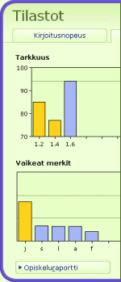

TypingMasterin tilastosivun avulla voit seurata taitojesi kehittymistä kurssin kuluessa. Havainnollisten kuvaajien avulla näet sekä nopeuden että tarkkuuden muutokset harjoitus harjoitukselta. Lisäksi näet tietoja vaikeaksi osoittautuneista merkeistä.
Opiskeluraportista löydät yksityiskohtaiset tulokset jokaisesta harjoituksesta. Voit myös tulostaa raportin arkistointia varten.
Tilastosivulle pääset valitsemalla "Tilastot" ohjelmavalikosta.